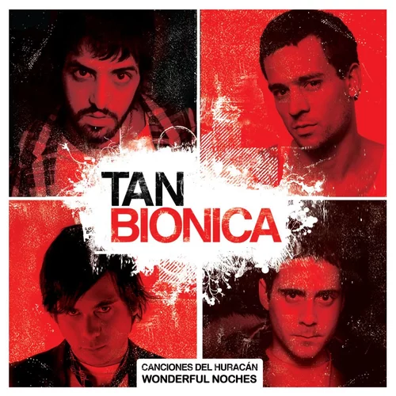

Este es el primer álbum de estudio del grupo musical. Fue grabado entre 2006 y 2007, y fue reeditado en 2009 junto con la reproducción extendida titulada Wonderful noches, y bajo el ala de éxitos como "Arruinarse", "Chica biónica" y "Lunita de Tucumán", con este álbum Tan Biónica lideró las listas de las radios más importantes del país.
